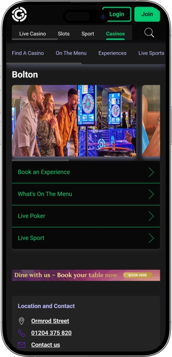

Exclusive welcome offer of
Exclusive welcome bonus of
Grosvenor Casino Bolton — 24/7 gaming, poker and slots
Top Casinos
Bonus Details
Casino
Bonuses
Rate
Free Spins
More Info
Get
Advantages
-
Big slot jackpots up to £10,000.
-
24-hour tables: roulette, blackjack, baccarat.
-
Poker room with cash games, events.
-
£40 bonus with £20 deposit online.
-
Single wallet linking venue and online.
-
Electronic roulette and fast-play games.
-
Free parking and easy-to-reach location.
- Grosvenor Casino Bolton stands out for mixing lively gaming with a relaxed, comfortable vibe. It suits quick sessions on slots as well as longer table play and poker. On-site services and smooth membership features help make each visit simple, flexible, and enjoyable.
Grosvenor Casino Bolton App


About Grosvenor Casino Bolton
The casino stands out for its 24/7 schedule and a strong mix of live tables, electronic games, and poker. Add food, drinks, and live sport viewing, and it becomes a complete night-out destination.
- Slot jackpots — up to £10,000.
- Bonus: £40 with £20 deposit.
- Poker events with sizeable prize pools.
Grosvenor Casino Bolton brings together classic table games and modern electronic play under one roof. It runs 24 hours a day, making it easy to drop in whenever it suits you. The feel typically blends a lively gaming floor with calmer spots to unwind.
Slot fans can enjoy a selection of machines and fast-paced options for shorter sessions. At the tables, you can experience the pace of roulette and blackjack and move between different limits. Poker players have a dedicated area built around cash games and special events. Food and drinks are available on site, which works well for longer visits. People often appreciate the practical side too, with clear entry rules and helpful staff. It suits groups looking for a social night as well as solo players focused on the games. Overall, it’s a well-rounded venue combining play, service, and entertainment.
The Grosvenor Casino Bolton vibe — gaming, comfort, and late-night energy
Grosvenor Casino Bolton welcomes guests with a modern, upbeat feel that stays friendly rather than overly formal. The layout typically balances a lively gaming floor with tidy waiting areas and comfortable seating, so it feels energetic yet easy to navigate. You can move between slots, electronic terminals, and live tables without losing that sense of comfort. The atmosphere is built around a full night out: some come for the thrill of wagers, others for the social buzz and the experience. Lighting, music, and the presentation of the different zones help set the tone, backed by approachable service.
The venue operates 24 hours a day, so your visit can be anything from a quick “luck check” to a full late-night session with breaks in between. This round-the-clock schedule suits quieter off-peak hours as well as the busier, more electric evening period. Live tables often feel like the heart of the classic casino experience, with dealers, pacing, and the rhythm of play. At the same time, electronic games help keep things moving when you want quick rounds and a faster tempo.
On site, there is typically a bar area and a place to grab food, so you can reset without leaving the venue for long. The bar works as a natural pause point between sessions—drinks, light bites, and a chance to chat or refocus. For guests planning to stay longer, comfort and clear organisation matter, and the venue is set up for that. This turns the casino into more than just gaming—it becomes a place to relax and spend the evening.
Entertainment can include themed nights, live sport on screens, and occasional live acts, which means the mood can shift depending on the day. During special events, the feel becomes more “occasion-led”, with more energy, conversation, and a stronger sense of occasion. The poker room adds its own flavour, focused on concentration and competitive excitement. Under one roof, you get multiple ways to enjoy the night.
Bonus and reward options across the Grosvenor ecosystem commonly revolve around membership and a single wallet that links in-venue play with online activity. For guests, that can mean easier balance management, tailored offers, and added perks with repeat visits. This strengthens the club-like feel and gives regulars a clear reason to return. Overall, Grosvenor Casino Bolton delivers a joined-up experience where gaming, service, and entertainment work together.
Service and money matters at Grosvenor Casino Bolton — how it works
Staff at Grosvenor Casino Bolton are typically focused on guest care: greeting you on entry, helping you find your way around, and answering practical questions, especially for first-time visitors. Dealers keep table play running smoothly and clearly, maintaining the pace and enforcing rules consistently. In the poker area, staff support seating, waiting lists, and the operational flow of cash games and events. Overall, the approach prioritises safety, transparency, and a comfortable experience for different types of guests.
English is the main language for customer support, and it’s the best way to get clear help on everything from game rules to membership and cashing out. At busy times you may come across staff who understand basic requests in other languages, but it isn’t something you should rely on. If you expect more complex questions, it helps to be ready to communicate in English or keep short notes on your phone. In any dispute, venue rules and responsible gambling standards will guide decisions.
On-site transactions are centred on pound sterling, with most key actions handled via the cashier area. Funding your play and paying for on-site services is commonly done using cash and bank cards, as well as options connected to membership and a single wallet where applicable. The exact methods available can depend on internal controls, verification requirements, and player protection rules. If you’re planning larger transactions, it’s smart to factor in potential limits and ID checks.
Cash machines are typically available either inside the venue or very nearby, making it easy to withdraw cash when needed. Dedicated currency exchange isn’t always offered as an in-venue service, so it’s best to arrive with funds in pounds. If you’re visiting from abroad, a card with favourable exchange rates or pre-exchanged cash can keep things simple. This reduces interruptions and helps your session feel seamless.
Cashing out winnings usually depends on the type of play and the amount involved: smaller payouts are often handled quickly at the cashier, while larger sums may require additional identity and source-of-funds checks. In some cases, payouts can follow an agreed process or staged handling as part of standard security measures. On tax, the practical takeaway is that the venue operates under local rules, while your personal tax position depends on residency and individual circumstances. For substantial wins, keep payout records and consider speaking to a tax adviser if needed.
Visiting rules at Grosvenor Casino Bolton — what to know before you go
Grosvenor Casino Bolton is for adult guests, and you may be asked for valid ID on entry, especially if you look younger. Clothing should be neat, and a smart-casual approach helps avoid issues at the door. Inside, table etiquette matters and staff actively protect comfort and safety across the floor. Filming and photography on the gaming floor are often restricted to protect privacy and game integrity. Entry can be refused if someone is clearly intoxicated, as responsible gambling is a priority. You must not interfere with dealing, touch cards, or handle chips outside the correct procedures. Disputes should be handled through staff rather than arguments with other guests. Phone use may be limited at certain tables, especially during active hands. Before you play, it’s worth checking minimum stakes and table limits to find the right fit. The venue runs 24/7, so door control can be tighter during peak hours. If you’re staying a while, plan breaks and set a sensible spend limit. Getting there is usually straightforward by car or public transport, and guest parking is a strong practical plus.
Key rules and restrictions:
- • Age and ID: 18+ only; ID may be requested on entry and for larger payouts.
- • Conduct: no aggression, abuse, or interference with games; staff instructions must be followed.
- • Alcohol: visible intoxication can mean refused entry or service.
- • Recording: photo/video on the gaming floor is often restricted—ask staff first.
- • Phones: some games and tables may request no phone use during hands.
- • Security: bag checks and extra controls may apply during busy periods.
Dress code (guidance):
- • Good choices: shirts, polos, smart jeans, dresses, closed shoes, tidy everyday wear.
- • Avoid: sportswear, dirty/torn items, beach flip-flops, offensive slogans.
- • Easy rule: when in doubt, choose smart casual.
Getting there and parking:
- • By car: easy access in and around the town centre; guest parking is commonly available.
- • Public transport: bus routes nearby and walkable access from key transport points.
- • Timing tip: weekday daytime is calmer; evenings and weekends bring more buzz.
The Grosvenor One loyalty programme in Bolton — tiers, bonuses, and perks
Loyalty at Grosvenor Casino Bolton is typically built around Grosvenor One and a single wallet that links in-venue play with online activity. For guests, that means easier balance management and more tailored offers over time. You can start with simple sign-up and progress through tiers as your activity grows, unlocking stronger benefits. The programme helps structure your bankroll: funding, using funds, and cashing out can feel more streamlined. With regular visits, the value becomes clearer as rewards and perks add up across gaming and leisure. Responsible gambling tools are also part of the experience, including limits that help you stay in control. Members often see invitations to events, targeted slot or poker promotions, and occasional offers on food and drink. Many also appreciate quicker entry and smoother service at peak times. The programme is especially useful if you mix venue visits with online play, because it adds flexibility and more ways to benefit. Newcomers like the straightforward start, while regulars enjoy the cumulative effect and the club feel. Overall, Grosvenor One adds practical advantages that make each visit feel more rewarding. The more consistent your activity, the more noticeable the status benefits become.
Registration conditions
- • Age: 18+ and readiness to verify identity.
- • Details: name, contact info, date of birth, address.
- • Verification: documents may be required for wallet features and larger transactions.
- • How to join: register as a new member or link an existing club card/number.
- • Security: set a PIN/password and optional limits.
Tiers and how to reach them
- • Base / Starter: after sign-up; access to core rewards and offers.
- • Silver: with steady repeat visits; more targeted promos and invitations.
- • Gold: with higher frequency and play volume; improved perks and faster service.
- • Platinum / VIP: for top activity; priority support and the strongest package.
Bonuses and perks
- • Online welcome offer: £40 for a £20 deposit — a quick start when activating the online wallet (terms and eligible games can vary).
- • Online slots bonus: up to £20 extra on slots — useful for trying new titles and short sessions.
- • Single wallet: move funds between venue and online — convenience and added control.
- • Fast track entry: quicker access — especially useful on busy nights.
- • Personalised offers: food and drink deals — better value during breaks.
- • Poker perks: event invites and improved seating flow (during active poker periods).
- • Gifts and draws: periodic promos for members — from bonus play to small prizes.
- • Control tools: deposit limits and reminders — supports safer play.
Software Providers
Entertainment and Gaming at Grosvenor Casino Bolton
Bonuses and special offers at Grosvenor Casino Bolton — gaming, prizes, and events
Beyond loyalty, Grosvenor Casino Bolton often runs promotions that add extra excitement and value to a visit. On slots, the main attraction is jackpots and fast-play formats where outcomes depend on luck, stake size, and each game’s features. At live tables, the draw is the atmosphere and pace, while special offers may appear as themed nights or added-value experiences around your visit. Poker is periodically boosted by events where structure, buy-ins, and prize pools matter, plus the buzz that builds around the room. Entertainment-led offers tend to align with evenings and weekends, when guests combine play with social time. Seasonal moments can also appear, such as holiday periods, themed weeks, and special nights. Many enjoy pairing gaming with live sport on screens and a bar-style setting. From time to time, beginner-friendly initiatives can help new guests feel confident with the games. Another advantage is variety: from quick electronic terminals to classic tables and poker. Do note that promotions change, and participation can require registration or meeting specific rules. The more you keep an eye on what’s happening in venue, the more likely you are to catch the best-value offers. Overall, these promos complement the core gaming experience and make visits feel more eventful.
Examples of bonuses, wins, and offers
- • Slot jackpot: up to £10,000 — top payouts on selected machines/modes; depends on the game and stake.
- • Poker festival series: guarantees up to £50,000 — can appear during major stops and event weeks; exact terms depend on schedule and structure.
- • Poker satellites: entries from £25+£5 — a lower-cost route into bigger events.
- • Themed slot parties: on-site prize draws (for example, food/drink vouchers) — boosts the night-out feel.
- • Electronic roulette promos: prize draws/rewards for play streaks — great for fast tempo fans.
- • Seasonal events: themed décor and giveaways during festive periods — adds atmosphere and variety.
- • Sports nights: big games on screens plus bar-style offers — easy to mix viewing with play.
- • Gift vouchers: dining or visit certificates — a practical gift option.
- • Private gaming options: reserving areas/tables for groups (terms and minimums vary by time and demand).
- • Beginner-friendly promos: rule demos and guidance — helps new guests start comfortably.
Popular games at Grosvenor Casino Bolton — from classics to fast-play formats
Grosvenor Casino Bolton typically offers a mix designed for different styles of play, from classic live tables to fast electronic betting. Live table games are valued for dealer interaction, real-time pace, and that “true casino” feel where decisions happen in the moment. Roulette appeals because it’s easy to start and offers many bet types, while blackjack is popular for the way player decisions can influence outcomes. Baccarat is often seen as an elegant, straightforward game with quick rounds. Electronic versions keep the tempo high and suit guests who want to play without waiting for a seat. Slots stand out for variety, bonus features, and the chance of bigger payouts, including jackpots on selected machines. Poker has its own dedicated vibe, leaning more competitive, where discipline, reading opponents, and bankroll management matter. Newer players often begin with slots or electronic roulette before moving to live tables. Regulars frequently combine formats—quick games first, then tables, then poker. This mix keeps the night dynamic and lets you match the pace to your mood. It’s worth checking table limits and choosing games that fit your budget and confidence level. Overall, the selection supports both short visits and longer sessions.
Games and formats
- • Roulette (Live): classic pace, many bet options, strong table atmosphere.
- • Blackjack (Live): player decisions matter; loved for speed and clear rules.
- • Baccarat (Live): quick rounds and simple betting logic; a true classic.
- • Three Card Poker (Live): short hands, fast decisions, great for lively play.
- • Super Stud Poker (Live): poker-style mechanics focused on tempo and risk choice.
- • Electronic roulette: rapid betting cycles, no waiting for seats, ideal for short sessions.
- • Slots and machines: wide themes, bonus features, and potential jackpots up to £10,000 on selected units.
- • Poker (cash games and events): dedicated area blending strategy, psychology, and bankroll control.
Stakes at Grosvenor Casino Bolton — practical limit guidance for your budget
Stake sizes in a casino typically vary by time of day, demand, and the specific table or machine. Live tables often have higher minimums than electronic versions, but they deliver the full dealer-led experience and table atmosphere. Electronic games and many machines can start from smaller amounts, which suits beginners and anyone who likes short, controlled sessions. The ranges below are typical guidance points that help you understand the scale and choose a comfortable format.
| Game Type | Minimum Bet | Maximum Bet |
|---|---|---|
| Roulette (Live) | £2 | £500 |
| Blackjack (Live) | £5 | £1,000 |
| Baccarat (Live) | £5 | £1,500 |
| Three Card Poker (Live) | £2 | £250 |
| Super Stud Poker (Live) | £2 | £250 |
| Electronic roulette | £0.20 | £100 |
| Slots (per spin) | £0.10 | £10 |
| Poker (cash, buy-in) | £50 | £500 |
Events and entertainment at Grosvenor Casino Bolton — a night that keeps going
Grosvenor Casino Bolton is often seen as more than just gaming, with entertainment that extends beyond placing bets. A 24/7 schedule sets a unique tempo: you can drop in for a quick session or build a full night around gaming, drinks, sport, and an event-like buzz. The mood can shift by day—sometimes calmer and ideal for focused play, sometimes more celebratory when themed activities add extra energy. The poker area adds a competitive edge, where cash games and events create a sport-like atmosphere that draws an engaged crowd.
Weekend and peak-time entertainment can lift the experience further. On certain nights, you may see a more show-led feel—music, hosted moments, or themed parties that bring a taste of nightlife into the venue. This suits groups of friends who want gaming as part of a wider social plan. At the same time, guests who prefer a quieter vibe can often find space to settle into the games without the busiest buzz.
For sport fans, big fixtures on screens paired with a bar setting create a natural mix of viewing and play. You can switch between tables, conversation, and the match—especially when major sporting events are on. This turns the venue into a social casino experience, not just a gaming stop. Add poker meet-ups into the mix, and you can shape a full evening without travelling far.
Special slot and poker moments can add extra reasons to visit on specific days, bringing prize draws, on-site promos, and a stronger sense of occasion. Sometimes that looks like slot-focused events with giveaways and guidance, and sometimes it’s a poker tournament run that builds a festival-style feel. The key is accessibility: you don’t need complex planning—just choose the night and arrive. Overall, the venue makes it easy to create your own perfect plan, from calm gaming to a lively night out.
All entertainment options
- • Live sport on screens: major matches and events in a bar-like setting.
- • Live music and acts: occasional show elements on selected nights.
- • Themed nights: seasonal and occasion-led evenings with added atmosphere.
- • Poker events: cash games and series that bring competitive energy.
- • Slot events: draws, prizes, and activity around machines.
- • Social night-out vibe: gaming plus drinks and conversation for groups.
- • Private options: group arrangements available by agreement.
Bars, dining, and downtime at Grosvenor Casino Bolton — a comfortable way to spend the night
Downtime at Grosvenor Casino Bolton often follows a simple, effective rhythm: play, pause, eat or drink, then return to the tables or machines. On site, there is typically a bar where you can grab a drink and reset between sessions without leaving the venue. The bar vibe pairs well with live sport on screens and socialising, especially later in the day. For guests staying longer, having food and drink available is a key part of comfort.
Dining in this kind of venue is usually designed for flexibility, offering lighter bites for quick breaks and more filling options for a proper meal. That’s ideal if you’re planning a long night and don’t want to lose time searching elsewhere. The on-site setup supports the flow of the evening, letting you alternate gaming and rest without breaking the atmosphere. Groups in particular appreciate being able to keep the whole night in one place.
In terms of accommodation, the casino itself isn’t a hotel, but there are commonly nearby options if you’re visiting late or travelling in. A practical approach is choosing a hotel close by so you’re not relying on transport at night. That creates a mini-break feel: gaming, dinner, evening entertainment, and then rest without rushing. It turns the venue into a convenient hub where play and leisure naturally complement each other.
Overall, the experience is built around choice: you can focus on gaming, lean into the social side, or blend both. The bar and food options keep things comfortable during longer sessions. Nearby services and accommodation make it easier to plan around different schedules. The best approach is to think ahead about timing and set a pace that suits you.
Places to relax
- • Bar: drinks, breaks between sessions, a social feel, and sport on screens at selected times.
- • Restaurant/food area: quick bites and fuller meals for longer visits.
- • Lounge-style space: areas to unwind and chat between sessions.
- • Nearby hotels: a convenient overnight option after a late visit.
Frequently Asked Questions
You can often speak to poker staff for seating; scheduled events may have specific registration and buy-in rules.
Generally yes, though accepted methods can vary; it’s sensible to have both a card and some cash.
Limits, self-exclusion options, and staff support are commonly available to help control time and spending.